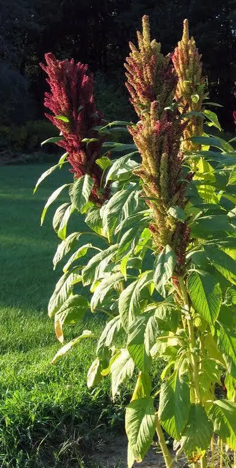

Can Chickens Eat Amaranth? Growing Amaranth for Chickens
Yes—with some important differences between the grain, leaves, stems, and seed heads. Amaranth can be a useful warm-season crop for a backyard flock, but plant identification, growing conditions, grain processing, and portion control all matter.
🌿 Can Chickens Eat Amaranth?
Yes, but the safest answer depends on which part of the plant you mean. Adult chickens may receive clean mature amaranth grain, small amounts of tender leaves from a positively identified edible variety, or thoroughly dried mature seed heads as supplemental foods. Amaranth should not replace an age-appropriate complete poultry ration.
| Form of Amaranth | Can Chickens Eat It? | Best Approach |
|---|---|---|
| Heat-processed mature grain | ✅ Yes | Use clean grain in small supplemental portions after appropriate processing. |
| Plain cooked grain | ✅ Yes | Cool completely and serve without salt, oils, butter, sugar, sauces, or seasoning. |
| Raw mature grain | ⚠️ Use cautiously | Do not treat substantial raw-grain feeding as equivalent to processed amaranth. Poultry research has shown poorer performance with high raw-grain inclusion. |
| Tender leaves from an edible variety | ⚠️ Limited amounts | Use clean young foliage conservatively and avoid stressed or heavily fertilized plants. |
| Mature seed heads | ✅ Enrichment | Offer only fully mature, thoroughly dried, clean heads from a known cultivated variety. |
| Coarse mature stems | ❌ Not useful feed | Older stems are fibrous and should not be treated as a meaningful poultry-feed ingredient. |
| Unknown wild pigweed | ❌ Avoid | Species, chemical exposure, nitrate concentration, and growing history may be unknown. |
| Palmer amaranth collected from the wild | ❌ Avoid | Treat it as an aggressive weed rather than a casual poultry forage source. |
| Moldy or musty grain | ❌ No | Discard it. |
| Chemically treated planting seed | ❌ No | Never feed seed coated or treated with pesticides or other planting-seed chemicals. |
Grain amaranth, vegetable amaranth, ornamental cultivars, and wild pigweeds are not automatically interchangeable. Start with a named edible variety and know which plant part you intend to harvest.
📊 Amaranth at a Glance
Versatile Grain-and-Greens Crop
🌾 Feeding Amaranth Grain to Chickens
Mature grain is the part of the plant that offers the greatest long-term value for most backyard chicken keepers. Properly harvested and cleaned grain stores well, takes relatively little space, and can become part of a diversified homegrown feed program.
Compared with common cereal grains, amaranth generally contains more protein and more lysine, making it an interesting supplemental crop for both people and poultry. However, higher protein does not mean it can replace a complete chicken ration.
Research has repeatedly shown that large amounts of untreated raw grain reduce poultry performance compared with properly processed grain. That is why Backyard Chicken Planner recommends viewing mature amaranth as a supplemental ingredient rather than a replacement for balanced feed.
- Excellent long-term dry storage potential.
- Very small seed stores a surprising amount of nutrition.
- Produces both human food and supplemental poultry feed.
- Thrives during hot weather when many cool-season crops decline.
- Easy to save seed for future plantings.
Many poultry studies evaluate diets in which professionally formulated rations contain substantial percentages of processed amaranth. Those studies are useful for understanding nutrition, but they should not be copied directly into an unbalanced backyard diet.
🥬 Can Chickens Eat Amaranth Leaves?
Yes—in moderation and only from a known edible variety.
Tender young leaves may provide seasonal variety, but foliage deserves more caution than the grain. Nitrate and oxalate concentrations can vary with species, fertility, drought stress, growing conditions, and plant maturity.
| Leaf Type | Recommendation | Reason |
|---|---|---|
| Young tender leaves | ✅ Good supplemental forage | Most palatable and easiest to consume. |
| Older mature leaves | ⚠ Limited | More fibrous and may contain higher concentrations of naturally occurring compounds. |
| Severely drought-stressed foliage | ❌ Avoid | Stress can contribute to elevated nitrate concerns. |
| Heavily fertilized foliage | ⚠ Use caution | Heavy nitrogen fertility may contribute to nitrate accumulation. |
| Unknown roadside plants | ❌ Avoid | Chemical exposure and contamination may be unknown. |
For most backyard flocks, the grain will usually provide greater long-term value than repeated heavy leaf harvesting.
🔥 Does Amaranth Need to Be Heat Processed?
This is one of the most common questions people ask, and unfortunately it is also one of the most oversimplified topics online.
Research evaluating amaranth in poultry diets consistently found better bird performance when substantial amounts of grain were heat treated rather than fed raw. Heat processing reduces or changes several naturally occurring antinutritional compounds, improving practical feeding value under controlled conditions. :contentReference[oaicite:1]{index=1}
That does not mean every handful of grain must be cooked before a chicken pecks at it. It simply means that if you intend to make amaranth a regular part of a supplemental feeding program, heat processing is the more conservative approach.
Suitable Backyard Methods
- Plain boiling.
- Plain steaming.
- Dry toasting without oil.
- Plain popped amaranth.
Do not prepare amaranth with butter, oils, salt, sugar, onions, garlic, sauces, spices, or other seasonings intended for people.
🌺 Mature Seed Heads
Many backyard keepers enjoy hanging mature seed heads inside the run as seasonal enrichment.
Instead of immediately separating every seed, chickens naturally peck through the dried heads over time. This encourages natural foraging behavior while slowing consumption.
- Harvest only fully mature heads.
- Dry them thoroughly.
- Inspect for mold.
- Check for insects.
- Discard any heads exposed to rodents.
- Remove any chemically treated ornamental material.
⚠ Wild Pigweed, Palmer Amaranth & Ornamental Types
One of the biggest sources of confusion is that "amaranth" refers to an entire genus rather than a single crop.
Some species are grown specifically for edible grain. Others are grown for vegetables. Others are ornamentals. Others are among the most troublesome agricultural weeds in North America.
| Type | Backyard Recommendation |
|---|---|
| Named grain varieties | ✅ Best choice |
| Vegetable amaranths | ✅ Leaves may be used conservatively |
| Ornamental varieties | ⚠ Only if you know they were never chemically treated |
| Unknown pigweed | ❌ Do not rely on visual identification alone |
| Palmer amaranth | ❌ Treat as an aggressive agricultural weed rather than a planned feed crop |
A packet of named grain amaranth seed is inexpensive. Feeding an unidentified wild plant is not worth the risk.
🐔 Backyard Chicken Planner Recommendation
If we could recommend only one way to use amaranth, it would be this:
- Grow a named grain variety.
- Harvest a few tender leaves early.
- Allow most plants to mature completely.
- Harvest and dry the seed heads.
- Clean and store the grain.
- Use processed grain as an occasional supplemental ingredient while complete poultry feed remains the foundation of the flock's diet.
This approach produces the greatest overall value from a single planting while avoiding most of the problems associated with overharvesting leaves or relying too heavily on raw grain.
🌾 Choosing the Right Amaranth Variety
Not every plant called amaranth is grown for the same purpose. Some varieties are selected primarily for edible grain, others for tender leafy greens, and many colorful ornamental cultivars are planted simply for appearance.
If your goal is to supplement a backyard flock, begin with a named grain variety or an edible vegetable amaranth rather than relying on volunteer plants or unidentified wild pigweeds.
| Type | Best Use | Recommendation for Chickens |
|---|---|---|
| Grain Amaranth | Seed production | ★★★★★ Best overall choice for supplemental grain. |
| Vegetable Amaranth | Tender edible leaves | ★★★★☆ Excellent seasonal greens with modest grain production. |
| Dual-purpose varieties | Leaves and grain | ★★★★★ Excellent for backyard gardens. |
| Ornamental varieties | Landscape flowers | ★★☆☆☆ Only if positively identified and never chemically treated. |
| Wild pigweeds | Weeds | ☆☆☆☆☆ Not recommended. |
If you are planting specifically for chickens, purchase seed marketed as grain amaranth or an edible dual-purpose variety. It produces more predictable harvests, cleaner seed, and fewer identification concerns than relying on volunteer plants.
🌎 Where Amaranth Grows Best
Amaranth is a true warm-season crop. Once established it tolerates hot summer weather remarkably well, making it an attractive choice for backyard chicken keepers in areas where cool-season crops struggle through midsummer.
| Growing Factor | Recommendation |
|---|---|
| Sunlight | Full sun (6–8+ hours daily) |
| Soil | Well-drained, fertile soil |
| Soil pH | Approximately 6.0–7.5 |
| Temperature | Warm soil after frost danger has passed |
| Moisture | Consistent during establishment, then moderate |
| Growing Season | Long warm summer |
Unlike many leafy greens, amaranth often performs best during the hottest part of the growing season. That makes it a useful companion crop alongside cool-season forage crops such as kale, collards, or white clover that naturally slow during summer.
🌱 Planting Amaranth
Amaranth seed is extremely small. Most planting problems come from covering the seed too deeply rather than planting too shallowly.
- Wait until frost danger has passed.
- Prepare a smooth, weed-free seedbed.
- Plant seed no deeper than about ¼ inch.
- Firm the soil gently after sowing.
- Keep the surface evenly moist until germination.
- Thin crowded seedlings after emergence.
Many gardeners accidentally bury the tiny seed too deeply. A shallow planting depth combined with dependable surface moisture generally produces much better emergence than deep planting.
🌿 Growing and Caring for Amaranth
Once established, amaranth is a relatively forgiving crop, but good early management has a major influence on final seed production.
| Task | Best Practice |
|---|---|
| Watering | Water consistently during establishment, then deeply as needed. |
| Weed Control | Control weeds early before plants become crowded. |
| Fertilizer | Moderate fertility is generally sufficient. Avoid excessive nitrogen if leaf nitrate accumulation is a concern. |
| Spacing | Thin plants enough to allow good airflow. |
| Support | Usually unnecessary, although very tall grain varieties may lean in exposed windy locations. |
Healthy plants often become surprisingly large by late summer, producing impressive seed heads while continuing to provide useful shade and visual interest in the garden.
🐝 Pollinators and Wildlife
Although grain production is the primary goal for many backyard chicken keepers, flowering amaranth also attracts numerous beneficial insects. Songbirds frequently visit mature seed heads as they ripen, which means harvest timing becomes important if you want to keep most of the grain for your flock.
Waiting too long can allow wild birds to remove a surprising amount of seed. Harvesting shortly after the heads mature—but before heavy wildlife feeding begins—usually provides the best balance between seed quality and yield.
✂️ Harvesting Amaranth for Chickens
Harvesting is the stage where many growers lose the greatest amount of seed. Cutting too early reduces grain maturity, while waiting too long allows weather, birds, or natural shattering to remove part of the crop before it ever reaches storage.
The goal is to harvest when the seed heads are mature but before significant seed loss begins.
| Sign | What It Means |
|---|---|
| Lower leaves drying | Plant is approaching maturity. |
| Seed rubs free easily | Most seeds have matured. |
| Bird activity increases | Seeds are becoming attractive to wildlife. |
| Seed heads begin drying | Harvest time is approaching. |
| Large numbers of seeds falling naturally | Harvest should not be delayed. |
Many experienced growers harvest slightly before complete field drying because fully dry seed heads can shatter surprisingly easily during handling.
🪜 Step-by-Step Harvesting
- Choose a dry day. Avoid harvesting after rain or heavy morning dew.
- Cut the mature seed heads. Leave several inches of stem attached to make handling easier.
- Handle gently. Rough handling causes mature seeds to fall from the heads.
- Move the harvest under cover. Protect it from rain, rodents, and birds.
- Finish drying before threshing. Good airflow is more important than high temperatures.
🌬 Drying Amaranth Seed Heads
Proper drying is one of the most important steps in preserving grain quality. Moist seed can quickly develop mold, while grain stored too warm may spoil even if it initially appears dry.
- Spread seed heads in a single layer.
- Provide continuous airflow.
- Protect from rain and condensation.
- Turn heads occasionally for even drying.
- Do not pile freshly harvested heads deeply.
Commercial producers monitor grain moisture carefully before long-term storage. Backyard growers should simply remember the same principle: grain should be completely dry before sealing it in storage containers. Extension guidance generally recommends grain moisture around 10–12% (or lower) for safe long-term storage. :contentReference[oaicite:1]{index=1}
🌾 Cleaning and Processing Amaranth Grain
Harvesting is only the beginning. The grain must still be separated from the seed heads, cleaned, and inspected before storage.
| Step | Purpose |
|---|---|
| Threshing | Separate seed from the flower heads. |
| Screening | Remove larger plant fragments. |
| Winnowing | Separate light chaff from heavier seed. |
| Final inspection | Remove damaged or contaminated material. |
👋 Threshing Amaranth
Threshing simply means removing the tiny seeds from the mature flower heads.
For backyard quantities, many growers rub the dried heads between their hands over a clean container or gently beat them inside a clean cloth or paper bag. The goal is to free the seed without unnecessarily crushing it.
Many first-time growers are surprised by just how small amaranth grain actually is. Don't mistake the tiny seed size for poor crop quality.
💨 Winnowing
After threshing, the grain still contains pieces of flowers, stems, and other lightweight material called chaff.
Winnowing separates the heavier seed from this lighter debris using moving air.
- Pour grain slowly between two containers on a light breezy day.
- Use a small fan indoors.
- Repeat several passes rather than trying to clean everything at once.
- Finish by removing obvious debris by hand.
Don't worry about achieving commercial perfection. Small amounts of harmless plant material remaining after careful cleaning are usually far less important than preventing moisture, insects, or mold during storage.
🫙 Storing Amaranth Grain
Properly dried grain can remain usable for long periods when protected from moisture, insects, rodents, and repeated temperature swings.
| Storage Factor | Recommendation |
|---|---|
| Container | Food-safe airtight container |
| Temperature | Cool and stable |
| Moisture | Keep completely dry |
| Inspection | Check periodically for insects, heating, or mold |
| Rodents | Prevent all access |
If stored grain develops condensation, heating, mold, insects, webbing, or a musty smell, discard it rather than risking exposure to spoilage organisms or mycotoxins.
🐔 Feeding Amaranth to Chickens
Once harvested and properly prepared, amaranth can become one of the most versatile crops in a backyard chicken garden. Different parts of the plant serve different purposes throughout the growing season, allowing a single planting to provide value for several months.
| Plant Part | When to Use | Role |
|---|---|---|
| Tender leaves | Early season | Fresh supplemental greens |
| Young stems | Early season | Occasional forage |
| Mature seed heads | Late season | Pecking enrichment |
| Processed grain | Year-round | Supplemental energy and protein |
Think of amaranth as one part of a diverse homegrown feeding program rather than a single "super feed." Combining several crops generally produces a more balanced and resilient supplemental feeding system.
🧪 Nutrition and Safety
One reason grain amaranth has attracted interest for both human food and poultry diets is its unusual nutritional profile.
| Characteristic | Why It Matters |
|---|---|
| Higher protein than many cereal grains | Useful supplemental protein source. |
| High lysine content | Helps complement grains naturally lower in lysine. |
| Higher oil content | Provides concentrated energy. |
| Tiny seed size | Easy for chickens to consume after preparation. |
| Good storage potential | Useful for winter supplementation. |
Although amaranth compares favorably with many cereal grains, it still lacks the complete nutritional balance required by growing chicks, laying hens, or breeding birds. Calcium, certain vitamins, minerals, and amino acid balance remain reasons to keep a complete poultry ration as the foundation of the diet. :contentReference[oaicite:1]{index=1}
⚠ Common Feeding Mistakes
- Replacing complete poultry feed with homegrown grain.
- Feeding moldy stored grain.
- Collecting unidentified wild pigweeds.
- Offering chemically treated seed.
- Assuming more is always better.
- Ignoring proper drying before storage.
None of these mistakes are unique to amaranth, but together they account for many of the problems people encounter when experimenting with homegrown feed crops.
🌱 Why Amaranth Works Well in Backyard Feed Gardens
One of amaranth's greatest strengths is that it fills a seasonal gap. While cool-season crops often slow dramatically during hot weather, healthy amaranth plants continue growing through much of the summer.
- Sunflowers
- Cowpeas
- Field corn
- Pumpkins
- Mulberry
- Jerusalem artichokes
Rather than depending on a single crop, combining several complementary feed crops usually produces a longer harvest season, more diverse nutrition, and a steadier supply of supplemental forage and grain.
💰 Can Growing Amaranth Reduce Feed Costs?
Potentially—but expectations should remain realistic.
A small backyard planting is far more likely to provide enrichment, seasonal greens, and supplemental grain than eliminate purchased feed. The actual value depends on growing conditions, harvest success, storage losses, labor, and how much of the crop is ultimately usable.
| Factor | Influence on Savings |
|---|---|
| Weather | ★★★★★ |
| Harvest efficiency | ★★★★★ |
| Bird and wildlife losses | ★★★★☆ |
| Storage success | ★★★★★ |
| Purchased feed prices | ★★★★★ |
Many backyard keepers eventually decide that the greatest value of amaranth isn't simply reducing feed costs—it's producing a reliable, homegrown supplemental crop that also provides human food, supports pollinators, and stores well for winter use.
🏡 Is Amaranth Right for Your Backyard Flock?
If you have room for only a few supplemental feed crops, amaranth deserves serious consideration. It combines attractive garden appearance with impressive heat tolerance, edible leaves, nutritious grain, and excellent storage potential.
★★★★★ One of the best warm-season supplemental feed crops for backyard chicken keepers willing to harvest and process grain properly.
For many flocks, the best strategy is to grow amaranth alongside crops such as sunflowers, cowpeas, pumpkins, and mulberry rather than relying on any single plant to meet every nutritional need.
❓ Frequently Asked Questions
Can chickens eat amaranth every day?
Amaranth should be viewed as a supplemental food rather than a replacement for a complete poultry ration. There is no single research-based daily amount that is appropriate for every flock, so it is best used as one part of a varied supplemental feeding program.
Can baby chicks eat amaranth?
Healthy chicks should receive a complete chick starter as their primary diet. Homegrown amaranth supplements are generally unnecessary during the brooding period and should never replace starter feed.
Can chickens eat raw amaranth grain?
Small accidental amounts are different from intentionally making raw grain a significant part of the diet. Research has consistently shown better results with heat-treated grain when amaranth is used in meaningful amounts.
Can chickens eat cooked amaranth?
Yes. Plain cooked amaranth may be offered after cooling completely. Avoid adding butter, oil, salt, sugar, onions, garlic, sauces, or seasonings.
Can chickens eat amaranth leaves?
Yes. Tender young leaves from a positively identified edible variety may be offered in moderation. Avoid relying on unidentified wild plants or heavily stressed foliage.
Can chickens eat amaranth seed heads?
Yes. Fully mature, thoroughly dried seed heads can provide excellent pecking enrichment while allowing chickens to harvest the grain naturally.
Can chickens eat Palmer amaranth?
Backyard Chicken Planner recommends avoiding Palmer amaranth as a planned feed crop. It is an aggressive agricultural weed, and wild plants may have unknown growing histories, herbicide exposure, or variable nitrate concentrations.
How long does amaranth take to grow?
Leaf harvest may begin relatively early, while grain production generally requires about 90 to 100 days under favorable growing conditions. Variety, climate, planting date, and weather all influence maturity.
Can amaranth replace commercial chicken feed?
No. Although amaranth is nutritionally impressive, it does not provide the complete balance of nutrients required by growing chicks, laying hens, or breeding birds. It works best as a supplemental crop alongside a balanced poultry ration.
Is amaranth worth growing for backyard chickens?
For many backyard flocks, yes. It combines attractive ornamental value with edible leaves, nutritious grain, excellent heat tolerance, long-term storage potential, and the ability to provide seasonal pecking enrichment from mature seed heads.
🌱 Continue Building Your Chicken Feed Garden
Amaranth is one of our favorite warm-season supplemental feed crops, but it performs even better as part of a diverse backyard feed garden. Growing several complementary crops provides a longer harvest season, more varied nutrition, and greater resilience during changing weather.
🧮 Helpful Backyard Chicken Planner Tools
📚 Research & References
- University of Kentucky – Small & Backyard Poultry: Amaranth in Poultry Diets :contentReference[oaicite:0]{index=0}
- University of Minnesota Extension – Growing Staple Vegetables Around the World in Minnesota (Amaranth). :contentReference[oaicite:1]{index=1}
- Peer-reviewed poultry nutrition studies evaluating heat-treated versus raw amaranth grain in poultry diets. :contentReference[oaicite:2]{index=2}
- University extension publications on grain amaranth production, harvesting, drying, and storage.